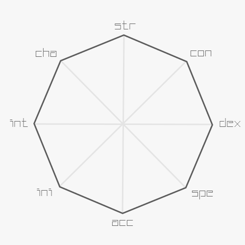
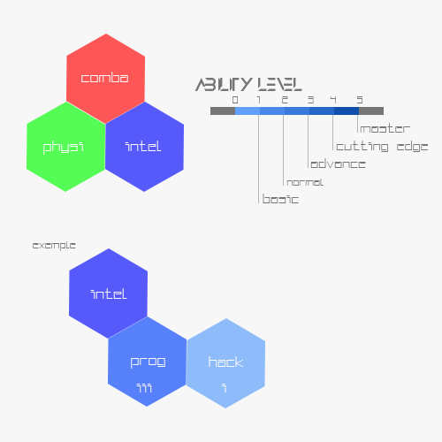

 Dans Elysium, chaque personnage possède huit attributs qui représentent ses capacités mentaux et physiques, présentés dans un diagramme octogonal. Les attributs doivent respecter la règle de convexité qui dicte que la forme obtenue doit être obligatoirement convexe. De plus ils sont tous associés à une famille : Support, Mêlée, et Distance. La classe du personnage est déterminé par la forme du diagramme, formée par la répartition des points entre les trois familles. Les attributs sont les suivant :
| Strength | Force | Capacité physique d’un individu |
| Un score de 0 en force implique un handicap de capacité physique | ||
| Consitution | Constitution | Résistance corporelle |
| Un score de 0 implique une fragilité majeure de santé | ||
| Dexterity | Dextérité | Habilitée corporelle d'un individu |
| Un score de 0 implique un handicap d'agilité | ||
| Accuracy | Précision | Précision sur la vise d’un individu |
| Un score de 0 implique une maladresse majeure | ||
| Speed | Vitesse | Vitesse de parcours de l’individu |
| Un score de 0 implique un handicap de mouvement | ||
| Initiative | Initiative | Vitesse de réaction a un évènement |
| Un score de 0 implique une lenteur d’esprit | ||
| Intelligence | Intelligence | Capacité à raisonner |
| Un score de 0 implique une difficulté de réflexion | ||
| Charisma | Charisme | Prestance d’un individu vis-à-vis aux autres |
| Un score de 0 implique une difficulté de communication |
La classe Hacker offre un support informatique offensive sur des systèmes digitaux vulnérables. Il est essentiellement orienté sur l’intelligence.
La classe Courser offre un support physique qui mise sur son agilité et sa vitesse afin de permettre une liaison entre un opérateur et la cible. Il est essentiellement orienté sur la vitesse.
La classe Brawler est le combattant des bars qui mise sur sa force brute afin de provoquer d’important dégâts au corps à corps. Il est essentiellement orienté sur la force.
La classe Assassin est le combattant agile qui profite de sa dextérité afin de porter un coup fatal sur son adversaire. Il est essentiellement orienté sur la dextérité.
La classe Assault est le combattant à distance qui mise sur sa précision et son agilité pour éliminer son adversaire. Il est essentiellement orienté sur la précision et dextérité.
La classe Sniper est le combattant à très grande distance qui profite de son environnement pour éliminer ses adversaires. Il est essentiellement orienté sur la précision.
Biensur, le joueur a le droit de créer son propre profile d'attribut. Pour facilité la répartition des points, un petit calculateur est mis à disposition.
Les tests dans la partie se font sur un dé vingt dont la difficulté sera fixée sur plusieurs paramètres circonstancielles. Un jet d’attaque mêlée se fait avec un d20 + DEX + Bonus, de plus les dégâts mêlés se fait avec le dé de l’arme + STR + Bonus. Un jet d’attaque à distance de fait avec un d20 + ACC + Bonus, de plus les dégâts de l’attaque à distance se fait avec le dé de l’arme. Un 1 naturelle est toujours un échec critique, tandis qu’un 20 naturelle est une réussite critique. Lors d’une réussite critique, les dégâts sont doublés pour une attaque mêlée, et triplés pour une attaque à distance. Chaque personnage possède un niveau qui représente son avancement via diverse expérience dans le monde.
Un joueur a droit à deux actions sur un round à choisir entre une action de mouvement, et une action standard. Un joueur, qui voudrait faire deux actions de tir, recevra un malus de -4 en ACC sur son deuxième tir. Toutefois, un joueur ne peut que faire une attaque de mêlée. Si un joueur décide de faire une action qui requière un test dans plusieurs attributs, il devra lancer un dé additionner avec la moyenne géométrique des attributs sur une difficulté que le maître du jeu décidera. Un résultat de 1 est toujours un échec. Occasionnellement, et à sa propre discrétion, le maître du jeu peut accorder une réussite partielle au joueur. Le maître du jeu a toujours raison, même quand il n’a pas pensé à accorder sa clémence.
Lorsqu’un personnage a 0 HP, il est considéré comme étant inconscient. Chaque round que le personnage est dans cette état, il perd un point de vie. Il n’est considéré que mort quand il a atteint le double négatif de son HP. A la discrétion du maître du jeu, un personnage non joueur peut profiter de cette dernière règle, et meurt immédiatement.
| NEUTRAL
Neutre |
Posture par défaut n'apportant pas de bonus. | |
|
AIM
Visée |
ACC+x <= 2*ACC
SPE-x >= 0 INI+1 |
Visée améliore la précision aux dépens de la vitesse
Le joueur peut mettre autant de point bonus dans sa précision qu'il a en vitesse jusqu'à un maximum du double de la précision initiale pour autant que chaque point bonus ajouté est un point malus à retirer sur sa vitesse. En outre, le joueur gagne aussi un point en initiative. |
|
RUN
Course |
SPE+x <= 2*SPE
ACC-x >= 0 INI+1 |
Course améliore la vitesse aux
dépens de la précision
Le joueur peut mettre autant de point bonus dans sa vitesse jusqu'à un maximum du double de la vitesse initiale pour autant que chaque point bonus ajouté est un point malus à retirer sur sa précision. En outre, le joueur gagne aussi un point en initiative. |
|
COMBAT
Combat |
DEX+1 STR+1 INI+1 ACC-2 |
Combat améliore les capacités de combats au corps à corps
Le joueur gagne un bonus de +2 en dextérité, et en force, de même qu'il reçoit aussi un malus de -2 en précision. En outre, le joueur gagne aussi un point en initiative. |
|
PROTECT
Protection |
DEX+2 CON+2 SPE-2 |
Protection améliore les capacités protectives aux dépens de la vitesse.
Le joueur gagne un bonus de +2 en dextérité et en constitution, de même qu'il reçoit aussi un malus de -2 en vitesse. |
|
DISCRET
Discrétion |
Stealth+2 SPE-2 | Discrétion améliore la capacité à se camoufler aux dépens de la vitesse.
Le joueur gagne un bonus de +2 en camouflage, et reçoit un malus de -2 en vitesse. |
VISION ET COUVERT
Pour tirer sur un adversaire, le joueur doit savoir où se trouve son adversaire. Celui-ci peut être caché derrière un couvert qui lui procurera des bonus :
Pas de Couvert – None
Couvert léger – Le couvert léger donne un bonus de +2 au DP contre les tirs, et +2 en camouflage
Couvert lourd – Le couvert lourd donne un bonus de +4 au DP contre les tirs, et +4 en camouflage
Couvert totale – Le couvert bloque totalement la ligne de tir
Quand le joueur peut procéder à une action de tir, il pourra choisir un de ces catégories suivantes :
| Tir à vue |
Se met à vue pour tirer sur l'adversaire
None |
| Tir de réaction |
Se met à vue pour tirer sur l'adversaire si celui-ci se montre
Le joueur se prépare à tirer sur l'adversaire qui met dans son champ de vision pour lui tirer dessus. Si l'adversaire est touché, il perd ses actions restantes à la suite de son mouvement. |
| Tir de suppression |
Se met à vue pour faire un tir de suppression
Le joueur provoque une zone de suppression qui provoque un malus de ACC -2 sur l'adversaire, et permet au joueur de faire une attaque d'opportunité avec un malus de ACC -3. |
| Tir à l'aveugle |
Tire aveuglément sur un adversaire
Le joueur reçoit un malus de ACC -5, s'il sait où il se trouve l'adversaire via vision indirecte ; un malus de ACC -10, s'il ne sait pas où se trouve l'adversaire. |
| Tir à l'aveugle de suppression |
Tire aveuglément sur faire un effet de suppression
Le joueur provoque une zone de suppression qui provoque un malus de ACC -2 sur l'adversaire, et permet au joueur de faire une attaque d'opportunité avec un malus de ACC -13. |
| Coup normal |
Frappe l'adversaire
None |
| Coup puissant |
Frappe l'adversaire
Frappe l'adversaire avec plus de force |
| Coup puissant |
Frappe l'adversaire
Le joueur reçoit un malus de 10% sur le résultat final du jet d'attaque, arrondi vers le bas, mais gagne en bonus de force équivalent la moitié de la force initiales. |
|
Coup de tapette
Ou le coup distrayant |
Lance des coups sans la moindre réflexion
Le joueur essaye de frapper l'adversaire en lançant débilement ses coups. Ceci provoque à l'adversaire un malus de -1 sur son jet d'attaque de mêlée si ce dernier rate son test d'intelligence sur une difficulté de 5 pour s'empêcher de rire. |
| Coup d'environnement |
Frappe l'adversaire en utilisant son environnement
Si le joueur est près d'un endroit particulier tel un ravin, un mur, ou d'un objet tel qu'une caisse, un verre, le joueur peut demander au maître du jeu de profiter de ces éléments pour lui donner un avantage, voire même un effet secondaire à son coup normal. |
| Coup non-léthal |
Frappe l'adversaire sans mettre en danger sa vie.
Le joueur reçoit un malus de -2 sur le test d'attaque pour essayer de faire des dégâts non-léthaux sur un adversaire. |
Chaque personnage possède des compétences qui représentent les capacités techniques que le personnage possède.En outre chaque personnage possède aussi des compétences spécialisées ou trait qu’il a acquis via une certaine éducation, entrainement, ou autres évènements dans sa vie. Les compétences et traits sont répartis entre trois grandes familles : combat, physique, et intellectuelle. Chaque compétence a cinq niveaux possibles :
| 0 | UNKNOWN | Ignorant | – Le personnage ne connais pas la compétence |
| 1 | BASIC | Basique | – Le personnage est capable de faire des choses rudimentaires |
| 2 | NORMAL | Normal | – Le personnage est à un niveau moyen par rapport aux autres |
| 3 | ADVANCE | Avancée | – Le personnage à un niveau avancé |
| 4 | CUTTING EDGE | A la pointe | – Le personnage est à la pointe de la compétence |
| 5 | MASTER | Maîtrise | – Le personnage a une maîtrise totale de la compétence |

Toutefois, certaine des compétences peuvent demander des prérequis dans d’autre compétences. Nous pouvons prendre, par exemple, le cas d’Hacking niveau 1 qui requiert d’avoir la compétence Programmation niveau 3. En outre, il se peut que certaines des compétences soit capé à cause des limitations de son corps. Enfin, les traits n’ont pas de niveau puisqu’ils sont souvent liés à un évènement qui est Arrivé au personnage. Le personnage a droit à deux types de traits : trait de background et trait de campagne. Les traits de background, sont des traits liés à l'histoire du personnage, tandis que le trait de campagne sont des traits que le personnage gagne au cours de la campagne via diverse évènement marquant.
|
Pilotage
Phys (DEX) |
Permet au personnage de contrôler une grande partie des véhicules existants. |
|
Kenjutsu
Comb (DEX) |
Permet au personnage de maîtriser les sabres japonais.
Bonus ATK + niveau de Kenjutsu |
|
Furtivité
Phys (DEX) |
Permet au personnage de pouvoir procéder être discret même en vue de l'adversaire.
Bonus Stealth + niveau de Furtivité |
|
Parkour
Phys (SPE) |
Permet au personnage de mêler les acrobaties à la course pour prendre des chemins que d'autres ne pourraient pas suivre. |
|
Yamakasi
Phys (SPE) requiert Parkour lvl 2 |
Permet au personnage de mêler le combat au parkour pour améliorer ses dégâts en utilisant son inertie. |
|
Tireur d'Elite
Comb (ACC) |
Permet au personnage utilisant une arme de distance de pouvoir faire un tir précis sans malus supplémentaire en prenant un tour pour viser. |
|
Tireur d'Assaut
Comb (ACC) |
Permet au personnage de pouvoir visé en mode RUN, de plus il peut compenser son malus
due à la course.
Compense ACC par niveau de Tireur D'Assaut |
|
Programmation
Supp (INT) |
Permet au personnage de pouvoir exploiter de manière efficace un système informatisé. |
|
Hacking
Supp (INT) requiert Programmation lvl 3 |
Permet au personnage de pouvoir s'introduire dans un système informatisé. |
|
Electronicien
Supp (INT) |
Permet au personnage de pouvoir modifier des composants électroniques avancées. |
|
Diplomate
Supp (CHA) |
Permet au personnage de pouvoir modifier des composants électroniques avancées. |
|
Diplomate
Supp (CHA) |
Permet au personnage d'améliorer sa capacité de dialoguer, de même qu'il est capable de
parler dans n'importe quelle langue.
Bonus lors des dialogues + niveau d'Diplomate |
|
Manipulation
Supp (CHA) requiert Diplomate lvl 2 |
Permet au personnage de convaincre, et manipuler les gens de manière assez profonde.
Bonus lors des manipulations + niveau de Manipulateur |
| Haltérophile | +2 STR | Une journée qui commence avec 1000 pompes, est une bonne journée. |
| Agile comme le vent | +2 DEX | Toutes ces années à s'entrainer aux arts martiaux ont porté fruit. |
| Souplesse du RECON | +2 DEX | Il faut une certaine condition physique si on veut rester des heures immobiles sans crampes. |
| A appris l'importance d'esquiver les balles | +2 DEX | Comme quoi une balle dans l'épaule peut être une bonne lesson. |
| Formation de soldat | +1 STR +1 CON | Une, deux, une, deux, une, deux. |
| Coureur de Marathon | +1 SPE | A force de courir, on en devient bon. |
| Proactif du dimanche | +2 INI | Méfiez-vous des gens qui se lèvent tôt le matin à un dimanche. |
| I have seen things | +2 INT | Le personnage a exploré les méandres du deep web. |
| Tout beau, tout propre | +1 CHA | Prendre un bain tous les jours permet de garder sa peau soyeuse. |
| Ancien membre de Triade-1 | +1 CHA (sur les non-résidents) |
Le personnage possède des connaissances sur les mafias des non-résidents, de même qu'il garde un peu de sa notoriété d'antant. |
Lors de la création d’un nouveau personnage, le joueur remplit l’octogone des attributs afin de dessiner une forme géométrique convexe avec le nombre de point que permet sont niveau de départ. Un personnage de niveau 0 a droit à 16 points, à chaque montée de niveau impaire, il reçoit 4 point supplémentaire, et à une montée paire, il reçoit 8 point. Il peut être aussi limité par son type qui peut bloquer sa montée de niveau. De plus, le joueur a droit aussi à 8 point de compétences/traits qu’il peut utiliser pour soit monté de niveau sa compétence, ou rajouté un nouveau trait. Chaque montée de niveau, le joueur reçoit aussi un point de compétences/traits.
| LVL | 00 | 01 | 02 | 03 | 04 | 05 | 06 | 07 | 08 | 09 | 10 | 11 | 12 | 13 | 14 | 15 | 16 | 17 | 18 | 19 | 20 |
| UPG | +0 | +4 | +8 | +4 | +8 | +4 | +8 | +4 | +8 | +4 | +8 | +4 | +8 | +4 | +8 | +4 | +8 | +4 | +8 | +4 | +8 |
| TOT | 016 | 020 | 028 | 032 | 040 | 044 | 052 | 056 | 064 | 068 | 076 | 080 | 088 | 092 | 100 | 104 | 112 | 116 | 124 | 128 | 136 |
| Objet utilitaire | Dégât | Portée |
|
MG7 Grenade à fragmentation
Inspiré de la M67, la grenade M70 est une grenade remplie de shrapnel pouvant conférer des dégâts létaux dans rayons de 2 cases. |
1D12 | 3 cases + STR DC 10 + dist |
|
MF8 Grenade Flash
Inspiré de la M84, la grenade MF8 est une grenade flash qui aveugle les adversaires qui la regardent pendant un round dans un rayon de 10 case, et reçoit ensuite de même qu'il recevra un malus de -3 ACC sur son prochain tir. L'adversaire ne peut pas faire un tir en réaction. S'il se trouve derrière un couvert léger se trouvant dans un rayon de 5 case de la grenade, et qu'il ne regarde pas la grenade, il reçoit un malus de -1 ACC. |
3 cases + STR DC 10 + dist |
|
|
MS1 Grenade Fumigène
Inspiré de la M18, la grenade MS1 est une grenade fumigène qui créé un écran de fumée dun rayon de 4 cases qui dure une minute. Lécran de fumée empêche les tirs de réactions qui sont dirigé vers l'intérieur. |
3 cases + STR DC 10 + dist |
|
|
MB4 Grenade Moutarde
Inspiré de la M7A2, la grenade MB4 est une grenade moutarde qui empêche l'adversaire à agir tant qu'il na pas réussi son test de constitution et qu'il est dans un rayon de 3 case sur un DC 15, chaque test de constitution coute une action. |
3 cases + STR DC 10 + dist |
|
|
AN7 Grenade Incendiaire
Inspiré de la AN-M14, la grenade AN7 est une grenade incendiaire qui créé une zone incendiée dun rayon de 2 cases provoquant 1D8 dégâts par round à tous ceux qui se trouve dans la zone pendant 3 round. |
3 cases + STR DC 10 + dist |
|
|
EE4S EMP Grenade
La grenade EE4S est une grenade EMP (Electro-Magnetic Pulse) provoque une désactivation des composants électroniques basiques dans un rayon de 4 cases pour 2 round. Si la cible possède des composants électroniques intégrés, la cible doit faire un test de constitution sur un DC de 15. La grenade existe dans plusieurs modèles différents ayant des tests de DC variables. |
3 cases + STR DC 10 + dist |
| Arme de corps à corps | Dégât | Portée |
|
Poêle à frire
Arme de corps à corps qui est initialement une relique du passé datant du temps où on faisait encore frire des aliments. |
1D6 | Adjacente |
|
Machette
Arme de corps à corps souvent utilisé dans en exploration dans les forêts et jungle. Cet arme est assez répandue dans les bas-fonds des quartiers non-résidents pour sa multifonctionnalité. Il est encore normal de couper une noix de coco à coup de machette. | 1D5 | Adjacente |
|
Katana
Arme de corps à corps qui est initialement une relique du passé du temps des samouraïs. Maintenant, larme sert est couramment utilisé comme symbole dhonneur dans la région de Nippon Ni. |
1D7 | Adjacente |
| Pistolet PISTOL | Dégât | Courte | Moyenne | Longue |
| Glock-5S
Inspiré par le Glock 17 autrichienne, le Glock-5S est une arme de poing possédant deux modes de tir : semi-automatique et rafale. Cette arme existe dans une autre version, le Glock-5SE qui possède une empreinte biométrique.
|
SEMI 1D4 RAFL 3D4 |
-2 ACC -4 ACC |
-2 ACC -6 ACC |
-4 ACC -8 ACC |
| E7-USP
Inspiré par le HK USP, le E7-USP est une arme de poing très populaire doté d'un scanner dempreinte biométrique. | 1D5 | -2 ACC | -4 ACC | |
| Nine-Seven
Inspiré par le FN Five Seven, le Nine-Seven est une arme de poing doté d'un scanner d'empreinte biométrique. | 1D6 | -1 ACC | -4 ACC |
| Sub-Machine Gun SMG | Dégât | Courte | Moyenne | Longue |
| MP-10E
Inspiré par le HK MP7, le MP-10E est un pistolet-mitrailleur ayant un scanner biométrique pouvant tirer en mode automatique qui permet à lutilisateur de pouvoir tirer en multishot x5. |
1D5 | -2 ACC | -5 ACC | -10 ACC |
| UZI-200
Inspiré par le Uzi, le UZI-200 est un pistolet-mitrailleur pouvant tirer en mode automatique qui permet à lutilisateur de pouvoir tirer en multishot x5. Par le fait quil ne possède pas de scanner biométrique, il est fort apprécié par les petits gangs. |
1D4 | -2 ACC | -6 ACC | -10 ACC |
| PNinety-S
Inspiré par le Uzi, le UZI-200 est un pistolet-mitrailleur pouvant tirer en mode automatique qui permet à lutilisateur de pouvoir tirer en multishot x5. Par le fait quil ne possède pas de scanner biométrique, il est fort apprécié par les petits gangs. |
1D6 | -5 ACC |
| Fusil d'assaut RIFLE | Dégât | Courte | Moyenne | Longue |
| G50 Carbine Model S
Inspiré par le HK G36, le G50 Carbine Model S est une carabine ayant un scanner biométrique et deux modes de tir : semi-automatique et automatique.
|
SEMI 1D7 AUTO |
SEMI AUTO -3 ACC |
SEMI AUTO -3 ACC |
SEMI -4 ACC AUTO -7 ACC |
| AEG-SE
Inspiré par le AEK-971, le AEG-SE est un fusil dassaut et deux modes de tir : semi-automatique et automatique.
|
SEMI 1D8 AUTO |
SEMI AUTO -3 ACC |
SEMI AUTO -3 ACC |
SEMI -4 ACC AUTO -7 ACC |
| 5M-Black
Inspiré par le M16 et le M4, le 5M-Black est un fusil dassaut ayant un scanner biométrique et deux modes de tir : semi-automatique et automatique.
|
SEMI 1D8 AUTO |
SEMI AUTO -2 ACC |
SEMI AUTO -2 ACC |
SEMI -3 ACC AUTO -6 ACC |
| Fusil d'assaut RIFLE | Dégât | Courte | Moyenne | Longue |
| AWC-E
Inspiré par la série d'arme AW, le AWC-E est un fusil à lunette ayant un scanner biométrique capable de tirer en semi-automatique grâce à son chargeur. Toutefois, l'utilisateur n'est capable de tirer qu'une fois par tour. |
1D12 | -4 ACC | ||
| SF-4A
Inspiré par le SV-98, le SF-4A est un fusil à lunette à levier qui tir un coup à la fois. Un tir prend une action standard, et lenclenchement du levier coûte une action de mouvement. Puisquil ny a pas de scanner biométrique, cette arme est très populaire auprès des mercenaires amateurs. |
1D13 | -4 ACC | ||
| G4SG-E
Inspiré par le G3SG1, le G5SG-E est un fusil à lunette semi-automatique ayant deux modes de tirs : coup par coup et semi-automatique.
|
SEMI 1D8 AUTO |
SEMI -4 ACC AUTO -5 ACC |
SEMI AUTO -3 ACC |
SEMI AUTO -4 ACC |
| Arme non létaux | Dégât | Portée/Malus |
| M50-Taser Pistolet Taser
Inspiré par la M-26 Taser, le M50-Taser est un pistolet taser capable denvoyer une charge électrique puissante provoquant des dégâts non létaux. L'arme envoie deux électrodes qui s'agrippe sur l'adversaire ce qui oblige l'utilisateur à récupérer les électrodes avant de pouvoir tirer. |
1D8 non léthal | 2 cases |
| EPP150 Pulse Pistol
Le EPP150 Pulse Pistol est un pistolet à impulsion de plasma ayant un scanner biométrique. Le pistolet utilise le principe de "Low Temperature Plasma" qui crée un plasma assez froid pour ne pas brûler l'adversaire, tout en ayant une charge électrique assez intense pour affliger des dégâts non létaux. Par frottement de l'air, le plasma se désagrège si bien que l'arme ne peut que tirer en portée moyenne maximum. |
Courte 1D7 non léthal Moyenne 1D5 non léthal |
Courte Moyenne -1 ACC |
| EPP200 Pulse Rifle
Inspiré par le EPP150, le EPP200 est un fusil mitrailleur à impulsion de plasma ayant un scanner biométrique. Le fusil utilise le principe de "Low Temperature Plasma" qui crée un plasma assez froid pour ne pas brûler l'adversaire, tout en ayant une charge électrique assez intense pour affliger des dégâts non létaux. Par frottement de l'air, le plasma se désagrège si bien que l'arme ne peut que tirer en portée moyenne maximum. En outre, l'arme possède deux modes de tir : semi-automatique et automatique.
|
Courte 1D8 non léthal Moyenne 1D6 non léthal |
Courte SEMI AUTO -3 ACC Moyenne SEMI AUTO -3 ACC |